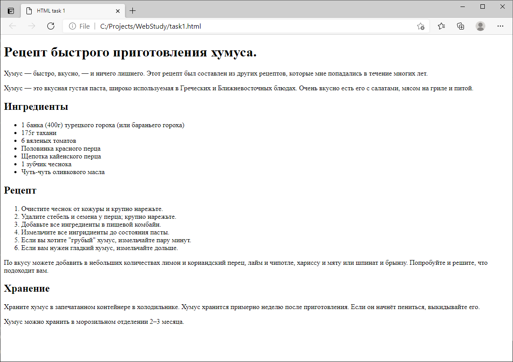

На данный момент у вас есть вся необходимая информация, чтобы разметить пример страницы рецепта.
Внимательно! читаем условие задания, смотрим на пример, и потом приступаем.
!! В НАЧАЛЕ создаем нужные папки, в Sublime СОХРАНЯЕМ ФАЙЛ, как указано в задании и только после этого начинаем писать код !!
Вам нужно в Вашей папке Projects создать папку Tasks и внутри этой папки создать файл task1.html
В этом файле Вы должны сохранить Ваше задание.
Вот текст рецепта который Вам нужно разметить, скопируйте его в Ваш файл:
Вот что у Вас должно получиться(Путь к файлу у Вас может быть другим):
Успешного решения! Ваш учитель, Кемалхан Тулегенович.
Ниже есть еще небольшое доп.задание.
Вложенные списки
Вполне нормально вложить один список в другой. Возможно, вы захотите, чтобы один список распологался внутри другого. Давайте возьмем второй список из нашего примера рецепта:
- Очистите чеснок от кожуры и крупно нарежьте.
- Удалите стебель и семена у перца; крупно нарежьте перец.
- Добавьте все ингредиенты в пищевой комбайн.
- Измельчите все ингридиенты до состояния пасты.
- Если вы хотите "грубый" хумус, измельчайте пару минут.
- Если вам нужен гладкий хумус, измельчайте дольше.
Последние две строки очень тесно связаны по смыслу, поэтому можно вложить их в свой собственный неупорядоченный список и поместить этот список внутри текущего. Это должно будет выглядеть так, вот Вам дополнительное задание: